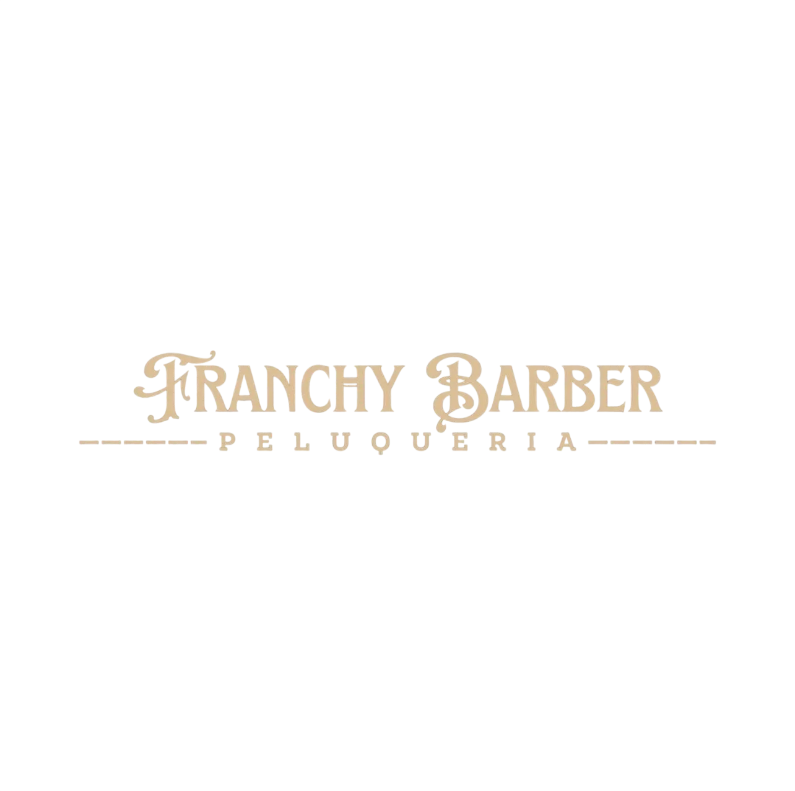
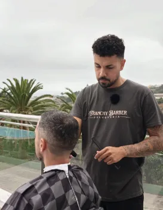

Soy una persona salvada por este oficio. Antes de dedicarme a la barbería, con apenas 15 años estaba perdido en la calle, sin rumbo ni dirección. Así pasé varios años hasta que un amigo despertó en mí la curiosidad por este mundo. Lo que empezó como un juego acabó convirtiéndose en mi vía de escape.
A los 18 años puse todo mi foco en la barbería y desde entonces, hasta mis 31, no he parado. Estudié en una academia, trabajé 8 años en la isla y, en un momento crítico de mi vida, tuve que decidir si seguir adelante o abandonar. Elegí irme a Noruega a vivir la experiencia, y allí me volví a enamorar de este oficio.
Con esa experiencia internacional decidí volver a Gran Canaria, mi tierra, la que siempre me enseñó a mantener los pies en el suelo y a recordar de dónde vengo. Me considero un profesional con recorrido nacional e internacional, con ganas de seguir aprendiendo y de ofrecer el mejor servicio a cada cliente.
Por eso hoy estoy aquí: para motivar y demostrar que no importa de dónde vengas ni lo que hayas hecho en el pasado. Siempre se puede salir adelante y mejorar si uno está dispuesto, porque todo en esta vida es posible. Si yo pude, tú también.

Perdido en la vida creyendo que la calle era la única salida, sin estudiar. De repente un amigo empieza el mundo de la barbería y yo decido hacer lo mismo a modo de gracia cortando en casa gratis, me gustó y decidí ir a una academia.
Aquí empecé a trabajar en una barbería en Schamann gracias a un amigo, no nos contrataban pero yo quería experiencia, desde aquí no paré nunca. A medida que pasaban los años tenía más experiencia y me movía en busca de mejores condiciones y mejores barberías para trabajar.
Este año fue decisivo en muchos aspectos, un antes y un después. Mi vida se estancó y necesitaba un cambio de aire, rumbo a NORUEGA, una gran experiencia donde aprendí mucho sobre la barbería y grandes profesionales.
Este es el año en el que decido abrir las puertas de Franchy Barber. Nunca pensé que llegaría el momento porque veía a todos mis amigos abrir su local menos yo, justo en el momento que pensaba y asumía que ya no iba a abrir un local apareció la oportunidad y decidí arriesgar.